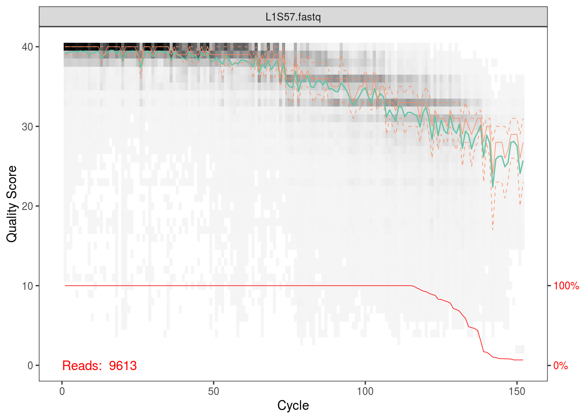
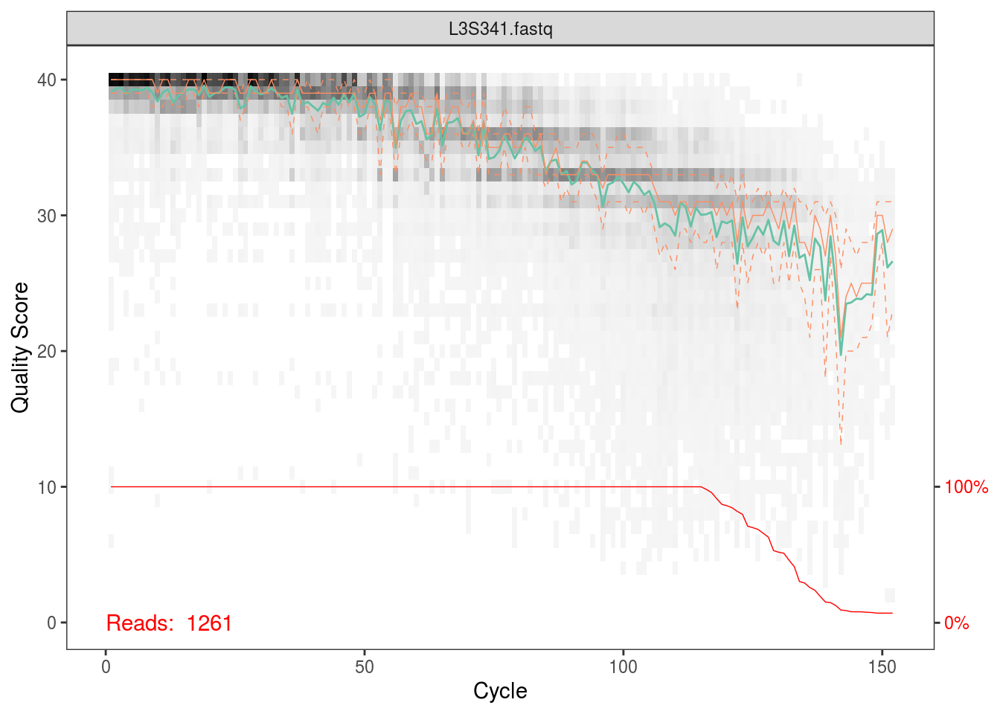
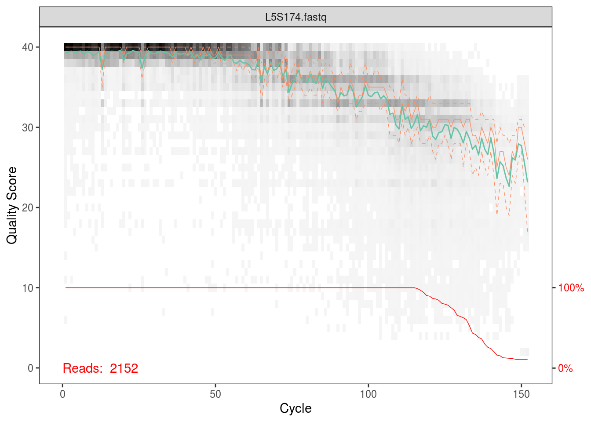

Chapter 8 Dada2
library(tidyverse)
library(dada2)
library(gridExtra)
library(DECIPHER)
library(ape)
library(phangorn)
library(phyloseq)First we need to use some qiime functions via the command line, so we’ll save them as variable names.
validate_mapping_file <- '/data/sw1/anaconda3/envs/qiime1/bin/validate_mapping_file.py'
split_libraries_fastq <- '/data/sw1/anaconda3/envs/qiime1/bin/split_libraries_fastq.py'
split_sequence_file_on_sample_ids <- '/data/sw1/anaconda3/envs/qiime1/bin/split_sequence_file_on_sample_ids.py'8.1 FASTQ Prep
We’re going to use the same data as we did with QIIME. Dada2 requires individual fastq files for each sample, so we’ll split our single fastq file using a few QIIME commands.
data_dir <- 'data/data_moving_pictures'
MAP <- read_delim(file.path(data_dir,'map.tsv'),'\t')## Parsed with column specification:
## cols(
## `#SampleID` = col_character(),
## BarcodeSequence = col_character(),
## LinkerPrimerSequence = col_character(),
## SampleType = col_character(),
## Year = col_double(),
## Month = col_double(),
## Day = col_double(),
## Subject = col_double(),
## ReportedAntibioticUsage = col_character(),
## DaysSinceExperimentStart = col_double(),
## Description = col_character()
## )Note that now we are forcing the split libraries command to also return a demultiplexed fastq file. We going to also add a bunch of arguments to ensure that QIIME does no filtering. We want to deal with that using dada2.
system2(split_libraries_fastq,args=c('-o',file.path(data_dir,'fastq_out_3'),
'-i',file.path(data_dir,'forward_reads.fastq.gz'),
'-b',file.path(data_dir,'barcodes.fastq.gz'),
'-m',file.path(data_dir,'map.tsv'),
'-r','999',
'-n','999',
'-q','0',
'-p','0.0001',
'--store_demultiplexed_fastq'))Next, we’ll split these fastq file into separate files for each sample:
system2(split_sequence_file_on_sample_ids,args=c('-i',file.path(data_dir,'fastq_out_3','seqs.fastq'),
'-o',file.path(data_dir,'fastq_out_3','sequences'),
'--file_type','fastq'))8.2 OTU Picking
We’re now going to run through the dada2 workflow. Dada2 is a reference free method, so this is analogous to de novo OTU picking had we used QIIME. Still, we can cluster our resulting count table into OTUs using a reference database; hence, we can compare our results.
Dada2 captures metagenomic variation by exploiting illumina sequencing errors. Briefly, everything is based on an error model (a Poisson distribution). A given read is defined as a sample sequence and is compared to all other reads. The model calculates the probability these reads were generated from the sample sequence given the error model – that is, the probability that these reads resulted from independent sequencing errors that were generated based on given transition probabilities and quality scores. If a set of reads are too abundant to be explained by this error model, then they are separated into their own partition. The game is to continuously partition the reads until each partition is consistent with the error model, allowing us to separate true biological variation from the variation solely due to sequencing error. At this point, the abundance of reads within a partition can be calculated, giving us an abundance table. We can then compare the sequences associated with a given partition to a reference database to assign taxonomy.
fqs <- list.files(file.path(data_dir,'fastq_out_3','sequences'),full.names=TRUE)The first thing we’ll do is plot the quality scores as a function of base position. If you recall the definition of Q from the QIIME tutorial, this should make sense to you, and it should also help you appriciate setting those parameters for quality filtering before.
sample_idx <- sample(length(fqs),5)
for (i in sample_idx) print(plotQualityProfile(fqs[i]))## Scale for 'y' is already present. Adding another scale for 'y', which will
## replace the existing scale.
## Scale for 'y' is already present. Adding another scale for 'y', which will
## replace the existing scale.
## Scale for 'y' is already present. Adding another scale for 'y', which will
## replace the existing scale.
## Scale for 'y' is already present. Adding another scale for 'y', which will
## replace the existing scale.
## Scale for 'y' is already present. Adding another scale for 'y', which will
## replace the existing scale.Per the Holmes group, illumina datasets often have errors in the first 10 base positions. Also, given the plots above, there seems to be a drop in quality towards the end of each read. Hence, we’ll trim our reads such that we keep bases 10 through 130.
fqs_filt <- gsub('sequences','filtered',fqs)
dir.create(gsub('(filtered).*','\\1',fqs_filt[1]),showWarnings=FALSE)
for (i in seq_along(fqs)){
fastqFilter(fqs[i],fqs_filt[i],
trimLeft=10, truncLen=130,
maxN=0, maxEE=2, truncQ=2,
compress=TRUE)
}The following command performs dereplication, returning a set of unique sequences and abundances from our set of fastq files.
derep <- derepFastq(fqs_filt)
names(derep) <- sapply(strsplit(basename(fqs_filt), "_"), `[`, 1)Dada2’s error model depends on the fact that there are 16x41 transition probabilities, but if these values are unknown, we can simply estimate them from the data. However, estimating the error rates to parameterize the model is costly, so it’s recommended to do this on a subset of the data, and then use these parameter estimates for the complete dataset:
dd_err <- dada(derep[1:10], err=NULL, selfConsist=TRUE)## Initializing error rates to maximum possible estimate.
## selfConsist step 1 ..........
## selfConsist step 2
## selfConsist step 3
## selfConsist step 4
## selfConsist step 5
## selfConsist step 6
## selfConsist step 7
## Convergence after 7 rounds.We can visualize the error estimates. This shows the frequency of each base transition as a function of quality score.
plotErrors(dd_err,err_in=TRUE,nominalQ=TRUE)## Warning: Transformation introduced infinite values in continuous y-axis
## Warning: Transformation introduced infinite values in continuous y-axisWe’ll now fit the full error model, using the estimated error rates from our subset of data. This step can be parallelized using the multihread argument. We’re also going to pool across samples, since this improves the detection of variants that are rare in a specific sample but less rare overall, but at a computational cost.
Note that we can pass a lot of arguments into this function that control the error model. As briefly described above, the game is to partition these sequences until each partition is consistent with being generated soley by illumina and amplification error variation, and not due to biological variation. A p-value is calculated to test the sequences that form new partitions, with signififcant p-values at a given threshold leading to new parittions.
Now, say we had a problem where rare sequence variants were of most interest. It would then make sense to use a less conservative significance threshold, leading to more significant p-values, more partitions, and hence more rare variants. We can do this by increasing the OMEGA_A value from its default value of \(1\times10^{-40}\). We’ll fit a second model and change the threshold to \(1\times10^{-20}\).
dd <- dada(derep, err=dd_err[[1]]$err_out, pool=TRUE)## 34 samples were pooled: 109854 reads in 18034 unique sequences.dd_rare <- dada(derep, err=dd_err[[1]]$err_out, pool=TRUE, OMEGA_A=1e-20)## 34 samples were pooled: 109854 reads in 18034 unique sequences.Finally, we’ll make our sequence table.
seqtab_all <- makeSequenceTable(dd)
seqtab_all_rare <- makeSequenceTable(dd_rare)And then we’ll remove chimeras. This function compares sequences against one another, and removes sequences that can be generated by joining two abundant sequences.
seqtab <- removeBimeraDenovo(seqtab_all)
seqtab_rare <- removeBimeraDenovo(seqtab_all_rare)First, note the difference in dimensions; there are more sequences in the rare table:
ncol(seqtab)## [1] 662ncol(seqtab_rare)## [1] 817Also note that despite now having a sequence abundance table that is similar in form to the OTU table we generated in QIIME, our ‘taxonomic variants’ are unique sequences and not OTUs:
seqtab[1:5,1:5]## CCGAGCGTTATCCGGATTTATTGGGTTTAAAGGGAGCGTAGATGGATGTTTAAGTCAGTTGTGAAAGTTTGCGGCTCAACCGTAAAATTGCAGTTGATACTGGATATCTTGAGTGCAGTT
## L1S105.fastq 1769
## L1S140.fastq 8
## L1S208.fastq 11
## L1S257.fastq 6
## L1S281.fastq 4
## GCGAGCGTTAATCGGAATTACTGGGCGTAAAGCGAGCGCAGACGGTTACTTAAGCAGGATGTGAAATCCCCGGGCTCAACCTGGGAACTGCGTTCTGAACTGGGTGACTAGAGTGTGTCA
## L1S105.fastq 5
## L1S140.fastq 1
## L1S208.fastq 0
## L1S257.fastq 0
## L1S281.fastq 0
## CCGAGCGTTATCCGGATTTATTGGGTTTAAAGGGAGCGTAGATGGATGTTTAAGTCAGTTGTGAAAGTTTGCGGCTCAACCGTAAAATTGCAGTTGATACTGGATGTCTTGAGTGCAGTT
## L1S105.fastq 8
## L1S140.fastq 1531
## L1S208.fastq 1552
## L1S257.fastq 870
## L1S281.fastq 1196
## GCGAGCGTTAATCGGAATAACTGGGCGTAAAGGGCACGCAGGCGGTGACTTAAGTGAGGTGTGAAAGCCCCGGGCTTAACCTGGGAATTGCATTTCATACTGGGTCGCTAGAGTACTTTA
## L1S105.fastq 0
## L1S140.fastq 0
## L1S208.fastq 5
## L1S257.fastq 0
## L1S281.fastq 0
## CCGAGCGTTGTCCGGATTTATTGGGCGTAAAGCGAGCGCAGGCGGTTAGATAAGTCTGAAGTTAAAGGCTGTGGCTTAACCATAGTACGCTTTGGAAACTGTTTAACTTGAGTGCAAGAG
## L1S105.fastq 1
## L1S140.fastq 0
## L1S208.fastq 2
## L1S257.fastq 0
## L1S281.fastq 0If we want to assign taxonomy from a reference database to these sequences, we can use the following command that applies a naive Bayes classifer to compare our sequences to classified sequences in a training set. First, we’ll use a GreenGenes training set:
ref_fasta <- 'data/data_stability/references/gg_13_8_train_set_97.fa.gz'
taxtab_gg <- assignTaxonomy(seqtab, refFasta=ref_fasta)
colnames(taxtab_gg) <- c("Kingdom", "Phylum", "Class", "Order", "Family", "Genus", "Species")Now, instead, we can try a Silva training set. Note that Silva does not give species level assignments
ref_fasta <- 'data/data_stability/references/silva_nr_v123_train_set.fa.gz'
taxtab_silva <- assignTaxonomy(seqtab, refFasta=ref_fasta)
colnames(taxtab_silva) <- c("Kingdom", "Phylum", "Class", "Order", "Family", "Genus")If we want species level assignments, we can do the following.
ref_fasta <- 'data/data_stability/references/rdp_species_assignment_14.fa.gz'
sptab_silva <- assignSpecies(seqtab, refFasta=ref_fasta, allowMultiple=FALSE, verbose=TRUE)Next, we might want to build a phylogenetic tree. First, we perform a multiple sequence alignment:
seqs <- getSequences(seqtab)
names(seqs) <- seqs
alignment <- AlignSeqs(DNAStringSet(seqs), anchor=NA)Then, we’ll build a tree, specifically, a maximum likelihood tree from a NJ tree.
phang_align <- phyDat(as.matrix(alignment), type="DNA")
dm <- dist.ml(phang_align)
treeNJ <- NJ(dm) # Note, tip order != sequence order
fit = pml(treeNJ, data=phang_align)
fit_gtr <- update(fit, k=4, inv=0.2)
fit_gtr <- optim.pml(fit_gtr, model="GTR", optInv=TRUE, optGamma=TRUE,
rearrangement = "stochastic", control = pml.control(trace = 0))And finally, we can build our phyloseq object for our GreenGenes table:
TREE <- phy_tree(fit_gtr)
META <- as.data.frame(MAP)
rownames(META) <- META$`#SampleID`
OTU <- seqtab
rownames(OTU) <- gsub('\\.fastq','',rownames(OTU))
OTU <- OTU[rownames(META),]
OTU <- otu_table(OTU,taxa_are_rows=FALSE)
META <- sample_data(META)
TAXA <- taxtab_gg[colnames(OTU),]
TAXA <- tax_table(TAXA)
PS <- phyloseq(OTU,TAXA,META,TREE)8.3 Running Dada2 on Proteus
Now let’s redo the analysis above, but on a cluster. I’ll explain below how to run dada2 via two ways. The first will involve simply using packages installed in a shared group folder. The second will cover installing dada2 in a local folder. If you lack access to the shared folder, or, if for some reason it no longer exists, go to method 2.
8.3.2 Method 2: Creating a Local Library
We first need to make two scripts. One will be an R package script that installs our packages into a personal library folder. The other will run this script, but it will first make said folder and also unload any preloaded gcc modules that may cause conflicts during pacakge installation.
First, make sure you’re in your home directory. We’ll now make the R package installer script. We’ll call it install_r_pkgs.R.
MYLIB <- Sys.getenv('R_LIBS_USER')
source('https://bioconductor.org/biocLite.R')
biocLite('dada2',lib=MYLIB)Next, we’ll make the bash script that runs this, which we’ll call run_install_r_pkgs.sh:
#!/bin/bash
module unload gcc
Rscript -e "dir.create(Sys.getenv('R_LIBS_USER'),showWarnings=FALSE,recursive=TRUE)"
R CMD BATCH install_r_pkgs.RFinally, we’ll run the bash script by entering the following at the command line (this will take a few minutes to run):
chmod +x run_install_r_pkgs.sh
./run_install_r_pkgs.shYou should now have a R folder in your home directory, and if you navigate through it, you should see a dada folder. To ensure your installation worked, in your home directly, type R to enter the R environment. Then, run library(dada2). Assuming everything loads correctly, we can proceed to submitting a job.
Note that in the submission script, you must remove the line where we changed the R_LIBS path:
export R_LIBS=/mnt/HA/groups/nameGrp/r_libswhich gives us the following submission script:
#!/bin/bash
#$ -S /bin/bash
#$ -cwd
#$ -j y
#$ -M user_name@email.edu
#$ -l h_rt=01:00:00
#$ -P namePrj
#$ -pe shm 16
#$ -l mem_free=12G
#$ -l h_vmem=16G
#$ -q all.q
. /etc/profile.d/modules.sh
module load shared
module load proteus
module load sge/univa
module load gcc/4.8.1
data_dir=/home/user_name/dirname/dada2
work_dir=/scratch/user_name/moving_pictures
mkdir -p $work_dir
cp -r $data_dir/moving_pictures/sequences $work_dir
cp $data_dir/dada.R $work_dir
cp ~/references/silva_nr_v123_train_set.fa.gz $work_dir
R CMD BATCH $work_dir/dada.R
mv $work_dir/*.Rout $data_dir
mv $work_dir/*.rds $data_dir
rm -rf $work_dir
exit 0